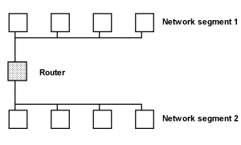

Win32 Programming
Features for Windows NT and Windows 95
by Marshall Brain
Network
Communications
This article
describes the Win32 functions that exist to support network communications,
and shows how to apply them in your own applications. Two different
facilities in the API support network communications: mailslots
and named pipes. This article discusses both techniques as well
as the advantages and disadvantages of each.
Because the Win32 API directly supports network communications, it is remarkably easy to create applications that use the network in many different ways. For example, you might want to create a multi- user conferencing system for your network, similar to the "CB" systems you find on Compuserve and other BBSs. In a system like this, users each run the conferencing program on their machines, and any messages they type get broadcast to all of the other users on the network. You generally use mailslots for the implementation because mailslots make it easy to broadcast information. Any multi-player game that uses the network employs similar techniques.
When you want to stream large quantities of data between two machines, you normally use point-to-point named pipe connections. For example, you would use named pipes for a digitized phone or video system implemented on a network. Any client/server configuration also uses named pipes. One central machine acts as the server, and then all of the clients connect to it individually with named pipes.
In order to feel comfortable the examples that follow, it is helpful to understand basic network terminology. The figure below demonstrates a simple network that you might find in a small business. Each machine has a network adapter that connects it to the network, as well as a name that uniquely identifies it. The network adapter determines the type of network, generally either Ethernet or Token Ring. The adapter also controls the media used for the network: coax, twisted pair, etc. The important thing to recognize is that all of the machines in a simple network like this can communicate with all of the others equally.
There are two ways for the machines to communicate using the native Win32 API functions. With a mailslot, one machine can broadcast a message that is received by all of the other machines on the network. With a named pipe, one machine chooses another and forms a specific connection to it. The advantage of a named pipe is that the connection is reliable. If the connection breaks, for example because a network card or cable malfunctions, both ends of the connection receive notification of the break immediately. Mailslots are unreliable in the sense that the sender has no way to confirm receipt of its messages. The advantage of a mailslot is that it is easy to get information to many machines simultaneously.
The figure above shows one network segment. A segment is defined as a group of machines directly connected to one another. There is a limit to the number of machines that can exist on one segment because network traffic grows with the number of machines. Generally the limit is about 100 machines. In a large company, each department might have a single segment consisting of 20 to 30 machines. All of the segments are then connected to one another with a router so that they can intercommunicate, as shown below. This distinction is important because, in general, a mailslot message is confined to a single segment, while named pipe messages can pass through the router to another segment.

Using mailslots and named pipes, three different communication architectures are possible: broadcast, point-to-point, and client/server. In broadcast mode using a mailslot, one machine sends a message to all others on the segment. In point-to-point communications, one machine forms a specific connection with another and data passes back and forth using a named pipe. In a client/server relationship, one machine acts as the server, and all clients connect to it with point-to-point named pipe connections. To emulate a broadcast operation with a client/server architecture, one machine sends a message to the server, and then the server sends duplicates of the message individually to each client.
Mailslots are the simplest way to perform network communications in the Win32 API. Mailslots provide a one-directional communication path from a sender to one or more recipients on the same network segment. You generally use mailslots when you want to send data to many recipients at once.
Mailslots are extremely easy to create, and reading and writing are done using the API's normal ReadFile and WriteFile functions. When creating the mailslot, a special path name passed to the CreateMailslot function causes the system to create a mailslot rather than a normal file. [You will find descriptions of the functions discussed here in the Win32 programmer reference manuals, or in the Win32 help file that comes with the SDK or Visual C++ v2.]
The programs shown in Listings 1 and 2 are as simple as possible so that you can easily see the steps necessary to transmit and receive data through a mailslot. Listing 1 shows how to create a mailslot server with the CreateMailslot function. The server is a queue that holds messages received until you read them using the ReadFile function. Messages are stored in the queue in the order of their arrival.
The name of the mailslot must be of the form "\\.\mailslot\[path]name". This looks just like a file name, and it acts like a file name in the ReadFile function. However, no actual file is created by the function: The mailslot is held in memory. A typical mailslot name, "\\.\mailslot\sms", is used in Listing 1. It is also possible to add "subdirectories" to the path to further categorize mailslots.
When you create the mailslot, you can specify the maximum message length, as well as the read timeout. Mailslots can send no more than 400 bytes over the network in a single message. If you set the timeout value to 0, then any call to ReadFile will return immediately whether or not there is anything in the buffer. If you set the timeout value to a specific number of milliseconds, any read operation will fail if that amount of time elapses before a message arrives. You can also use the MAILSLOT_WAIT_FOREVER constant to create a blocking read.
Listing 1 takes the non-blocking approach, and uses the GetMailslotInfo function to make sure that messages exist in the mailslot queue before performing a read. This function returns the maximum length of messages in the queue, the length of the next message in the queue, and the number of messages waiting. Listing 1 continuously checks to determine if messages exist in the mailslot. If there are, then it reads the first one. Reading from a mailslot is just like reading from a file.
Any message sent from any computer on the network to a machine running Listing 1 will be received provided that the mailslot names of the sender and the receiver match. Listing 2 shows how to send messages to a mailslot. It starts by using the normal CreateFile function to open a writeable connection to the mailslot. The program is referred to as a mailslot client because it writes to mailslot servers already running on the network. The CreateFile function understands, because of the use of the special mailslot file name, that you are not creating a file but instead wish to communicate with a mailslot. Four different formats for the file name are possible:
\\.\mailslot\[path]name \\*\mailslot\[path]name \\domain\mailslot\[path]name \\machine\mailslot\[path]name
In the first and last cases, the name specifies the local machine or a specific machine on the net, respectively. The second form specifies a broadcast operation to all machines in the local machine's primary domain. The third form specifies all machines in the indicated domain. See the book "Windows NT Administration: From Single Machines to Heterogeneous Networks", by Marshall Brain and Shay Woodard, for more information on domains and domain controllers.
After opening the mailslot, Listing 2 gets the local computer's name using GetComputerName, and then broadcasts the name to all mailslots in the current domain every five seconds.
Listing 1 uses a polling technique to check for messages. Every half second it calls GetMailslotInfo and checks to see if any messages are waiting in the slot. In general, polling is not a good technique to use in a multi-threaded environment because it is inefficient. You can eliminate the polling by setting the timeout value in CreateMailslot to an appropriate value, and then calling ReadFile with a buffer length of zero to wait for a message to arrive. Once this call to ReadFile returns you know a message exists, so call GetMailslotInfo and ReadFile as shown in Listing 1.
When you run Listing 2, it broadcasts to all machines on the network. If you run multiple copies of the reader on the same or different machines, all of them will see the messages produced by the writer. Alternatively, you can run multiple writers on the net and any copies of the reader will see the messages from all of them. In both Listing 1 and 2, also note the presumption that the program will be terminated externally. You can formally close either a mailslot server or client using the CloseHandle function.
Named pipes provide a guaranteed delivery mechanism. Instead of broadcasting the packet onto the network, you form a distinct connection to another machine with a named pipe. If the connection breaks, for example because a machine goes down or a portion of the network fails, both parties to the connection find out as soon as they try to send or receive anything. Packets are also guaranteed to arrive in sequence through a named pipe. The only problem with named pipes is that you lose the ability to broadcast packets. To broadcast anything, all of the target machines must have a connection to a central server, and the server must separately transmit the message to each one.
Named pipes are only slightly more difficult to create than mailslots. Listings 4 and 5 show how to create a simple point-to-point connection between two applications using named pipes. Run the receiving program shown in Listing 4 first, and then on the same machine run the sending program in Listing 5. The program will query you for the name of the machine to connect to. Since you are running the sender and the receiver on the same machine, type "." or enter your machine name. You will see a message sent from sender to receiver every five seconds or so. When you kill off the sender, notice that you immediately see a message in the receiver indicating that it has detected the break in the pipe. If you try to start up the sender without the receiver running, the sender will fail immediately because it cannot connect. Unlike mailslots, pipes can tell when the other end is not working properly.
A named pipe connection can occur across the network as simply as it occurs on the same machine. For example, if the server program in Listing 4 is running on a machine named "orion", log in to a different machine using an account with the exact same login ID and password as the one you are using on "orion". Run Listing 5 on the new machine and enter the name "orion" when it asks for the machine name. The connection will occur properly. Note that, with named pipes, you must know the name of the machine running the server.
Also note that if you have a different user try to connect to the receiver, then the connection fails. For example, if the user "jones" is running the receiver on the machine "orion" and the user "smith" tries to connect from another machine, the connection fails with an "access denied" error. This is the NT security system at work. See the Security chapter of "Win32 System Services: The Heart of Windows NT" for explanations and solutions.
In Listing 4, the program starts by creating a named pipe server using the CreateNamedPipe function. The name used with the CreateNamedPipe function will always have the form:
\\.\pipe\[path]name
As with mailslots, you can specify a path before the name of the pipe to clearly distinguish it from other pipes on the system.
The openMode parameter passed to CreateNamedPipe lets you determine the direction of the pipe. Named pipes can be one directional or bi-directional, depending on the following constants used with the openMode parameter:
PIPE_ACCESS_DUPLEX PIPE_ACCESS_INBOUND PIPE_ACCESS_OUTBOUND
The pipeMode parameter of CreateNamedPipe determines whether the pipe works with a pure stream of bytes, or with packets of bytes called messages. A stream of bytes has no logical boundaries. Messages contain a group of bytes perceived as a unit. You can declare byte or message behavior in both the read and write directions:
PIPE_TYPE_MESSAGE PIPE_TYPE_BYTE PIPE_READMODE_MESSAGE PIPE_READMODE_BYTE
A pipe can have more than one instance on a single machine. This capability allows an application to handle multiple clients, each in different threads, and is required to create a named pipe server. Since the example in Listings 4 and 5 is a simple point-to-point connection where only one instance is necessary, a maximum of one instance is specified in the call to CreateNamedPipe.
Listing 4 next waits for a connection on the named pipe using the ConnectNamedPipe function. A connection is formed in the server when a client program calls CreateFile with the proper machine and named pipe specified as its destination. Upon connection, the ConnectNamedPipe function returns. Alternatively you can specify an overlapped structure and ConnectNamedPipe will return immediately and later signal the event upon connection.
Listing 4 then enters a loop, waiting for data to arrive. The ReadFile function behaves slightly differently here than it does with files. Because this named pipe is in message mode, the ReadFile function will return as soon as it receives a complete message, regardless of how many bytes the message contains. It is possible to use a blocking read as shown, or to use an overlapped read.
Listing 5 is a simple client for Listing 4. Listing 5 starts by creating a connection to the named pipe with the CreateFile function. It then writes messages using the WriteFile function. Each individual call to WriteFile constitutes a message at the receiving end of the named pipe, so the receiver's ReadFile function will unblock when it receives the message. Each time the client writes, the server produces a message on the screen.
If two copies of the client try to connect to Listing 4 at the same time, then the server will reject the second client. If you terminate either the client or the server, then the other half of the pair will immediately terminate when it detects the broken connection.
Named pipes are often used in client/server systems, where the server uses a multi-threaded approach to handle multiple connections simultaneously.
//***************************************************************
// From the book "Win32 System Services: The Heart of Windows NT"
// by Marshall Brain
// Published by Prentice Hall
//
// This code implements a simple mailslot server (receiver) that
// uses polling.
//***************************************************************
// sms_recv.cpp
#include <windows.h>
#include <iostream.h>
int main()
{
char toDisptxt[80];
HANDLE hSMS_Slot;
DWORD nextSize;
DWORD Msgs;
DWORD NumBytesRead;
BOOL Status;
/* Create a mailslot for receiving messages */
hSMS_Slot=CreateMailslot("\\\\.\\mailslot\\sms",
0, 0, (LPSECURITY_ATTRIBUTES) NULL);
/* Check and see if the mailslot was created */
if (hSMS_Slot == INVALID_HANDLE_VALUE)
{
cerr << "ERROR: Unable to create mailslot "
<< GetLastError() << endl;
return (1);
}
/* Repeatedly check for messages until the
program is terminated */
while(1)
{
Status=GetMailslotInfo(hSMS_Slot,
(LPDWORD) NULL, &nextSize, &Msgs,
(LPDWORD) NULL);
if (!Status)
{
cerr << "ERROR: Unable to get status. "
<< GetLastError() << endl;
CloseHandle(hSMS_Slot);
return (1);
}
/* If messages are available, then get them */
if (Msgs)
{
/* Read the message and check to see if
read was successful */
if (!ReadFile(hSMS_Slot, toDisptxt, nextSize,
&NumBytesRead, (LPOVERLAPPED) NULL))
{
cerr
<< "ERROR: Unable to read from mailslot "
<< GetLastError() << endl;
CloseHandle(hSMS_Slot);
return (1);
}
/* Display the Message */
cout << toDisptxt << endl;
}
else
/* Check for new messages twice a second */
Sleep(500);
} /* while */
}
//***************************************************************
// From the book "Win32 System Services: The Heart of Windows NT"
// by Marshall Brain
// Published by Prentice Hall
//
// This code implements a simple mailslot sender.
//***************************************************************
// sms_send.c
// Usage: sms_send
#include <windows.h>
#include <iostream.h>
#include <string.h>
int main()
{
char toSendTxt[100], buffer[100];
DWORD bufferLen=100;
HANDLE hSMS_Slot;
BOOL Status;
DWORD NumBytesWritten;
/* Create the mailslot file handle for
sending messages */
hSMS_Slot=CreateFile("\\\\*\\mailslot\\sms",
GENERIC_WRITE, FILE_SHARE_READ,
(LPSECURITY_ATTRIBUTES) NULL,
OPEN_EXISTING,
FILE_ATTRIBUTE_NORMAL,
(HANDLE) NULL);
/* Check and see if the mailslot file was
opened, if not terminate program */
if (hSMS_Slot == INVALID_HANDLE_VALUE)
{
cerr << "ERROR: Unable to create mailslot "
<< GetLastError() << endl;
return (1);
}
/* form string to send */
GetComputerName(buffer, &bufferLen);
strcpy(toSendTxt, "Test string from ");
strcat(toSendTxt, buffer);
/* Repeatedly send message until program
is terminated */
while(1)
{
cout << "Sending..." << endl;
/* Write message to mailslot */
Status=WriteFile(hSMS_Slot,
toSendTxt, (DWORD) strlen(toSendTxt)+1,
&NumBytesWritten, (LPOVERLAPPED) NULL);
/* If error occurs when writing to mailslot,
terminate program */
if (!Status)
{
cerr << "ERROR: Unable to write to mailslot "
<< GetLastError() << endl;
CloseHandle(hSMS_Slot);
return (1);
}
/* Wait sending the message again */
Sleep(4800);
} /* while*/
}
//***************************************************************
// From the book "Win32 System Services: The Heart of Windows NT"
// by Marshall Brain
// Published by Prentice Hall
//
// This code implements a simple named pipe server (receiver).
//***************************************************************
// ssnprecv.cpp
// Usage: ssnprecv
#include <windows.h>
#include <iostream.h>
int main()
{
char toDisptxt[80];
HANDLE ssnpPipe;
DWORD NumBytesRead;
/* Create a named pipe for receiving messages */
ssnpPipe=CreateNamedPipe("\\\\.\\pipe\\ssnp",
PIPE_ACCESS_INBOUND,
PIPE_TYPE_MESSAGE | PIPE_WAIT,
1, 0, 0, 150,
(LPSECURITY_ATTRIBUTES) NULL);
/* Check and see if the named pipe was created */
if (ssnpPipe == INVALID_HANDLE_VALUE)
{
cerr << "ERROR: Unable to create a named pipe. "
<< endl;
return (1);
}
/* Allow a client to connect to the name pipe,
terminate if unsuccessful */
cout << "Waiting for connection... " << endl;
if(!ConnectNamedPipe(ssnpPipe,
(LPOVERLAPPED) NULL))
{
cerr << "ERROR: Unable to connect a named pipe "
<< GetLastError() << endl;
CloseHandle(ssnpPipe);
return (1);
}
/* Repeatedly check for messages until the program
is terminated */
while(1)
{
/* Read the message and check to see if read
was successful */
if (!ReadFile(ssnpPipe, toDisptxt,
sizeof(toDisptxt),
&NumBytesRead, (LPOVERLAPPED) NULL))
{
cerr
<< "ERROR: Unable to read from named pipe "
<< GetLastError() << endl;
CloseHandle(ssnpPipe);
return (1);
}
/* Display the Message */
cout << toDisptxt << endl;
} /* while */
}
//***************************************************************
// From the book "Win32 System Services: The Heart of Windows NT"
// by Marshall Brain
// Published by Prentice Hall
//
// Copyright 1994, by Prentice Hall.
//
// This code implements a simple named pipe sender.
//***************************************************************
// ssnpsend.cpp
// Usage: ssnpsend
#include <windows.h>
#include <iostream.h>
int main()
{
char *toSendtxt="Test String";
HANDLE ssnpPipe;
DWORD NumBytesWritten;
char machineName[80];
char pipeName[80];
cout << "Enter name of server machine: ";
cin >> machineName;
wsprintf(pipeName, "\\\\%s\\pipe\\ssnp",
machineName);
/* Create the named pipe file handle for sending
messages */
ssnpPipe=CreateFile(pipeName,
GENERIC_WRITE, FILE_SHARE_READ,
(LPSECURITY_ATTRIBUTES) NULL,
OPEN_EXISTING, FILE_ATTRIBUTE_NORMAL,
(HANDLE) NULL);
/* Check and see if the named pipe file was
opened, if not terminate program */
if (ssnpPipe == INVALID_HANDLE_VALUE)
{
cerr << "ERROR: Unable to create a named pipe "
<< endl;
cerr << GetLastError() << endl;
return (1);
}
/* Repeatedly send message until program is
terminated */
while(1)
{
cout << "Sending..." << endl;
/* Write message to the pipe */
if (!WriteFile(ssnpPipe,
toSendtxt, (DWORD) strlen(toSendtxt)+1,
&NumBytesWritten, (LPOVERLAPPED) NULL))
{
/* If error occurs when writing to named
pipe, terminate program */
cerr << "ERROR: Unable to write to named pipe "
<< GetLastError() << endl;
CloseHandle(ssnpPipe);
return (1);
}
/* Wait before sending the message again */
Sleep(4800);
} /* while*/
}
){kind=link}